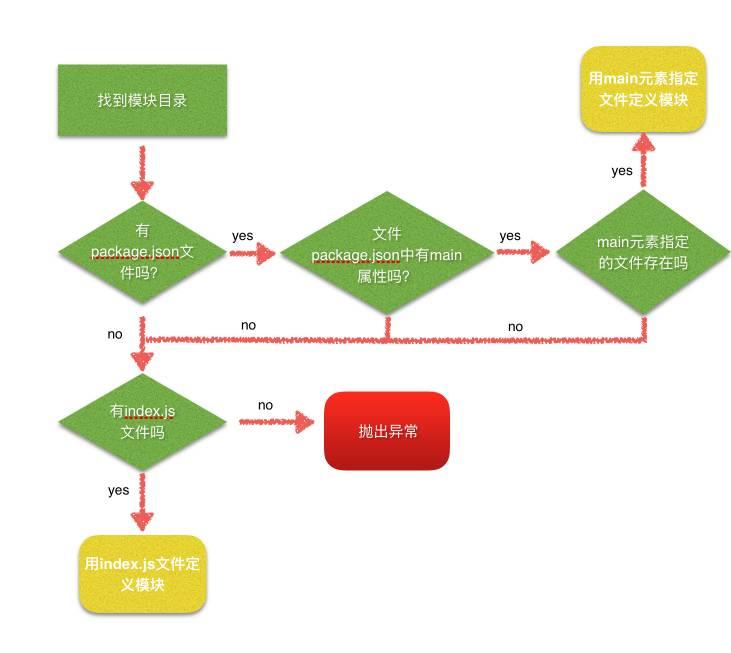

NodeJS中require引入文件模块发生了什么？
2017年4月28日
看NodeBB源码时，加载socket.io模块遇到了这个问题，这篇文章是我对此问题的一些研究结论。
模块入口文件搜索路径
- require引入文件夹时，node会优先查找目录下的package.json（即使有index.js也会先忽略）；
- 然后查找package.json文件中main键值对应的x.js（模块的入口文件）；
- 然后拿这个值进行相应模块加载；
- 否则，如果没有main键值或者找不到x.js对应的文件，则开始在文件夹中寻找index.js文件，如果有则加载该文件，没有则抛出异常。
附一张自制流程图

补充
- 如果package.json文件中main属性指定文件缺少后拓展名，Node则会进行拓展名分析，依次为js，json，node；
- 如果package.json文件中main属性指定的文件不存在，Node会将index作为默认文件名，依次查找index.js，index.json，index.node；
- 在目录分析的过程中如果没有定位到任何文件，则自定义模块进入下一模块路径进行查找；如果模块路径数组都被遍历完毕，依然没有查找到目标文件，则抛出查找失败的异常。